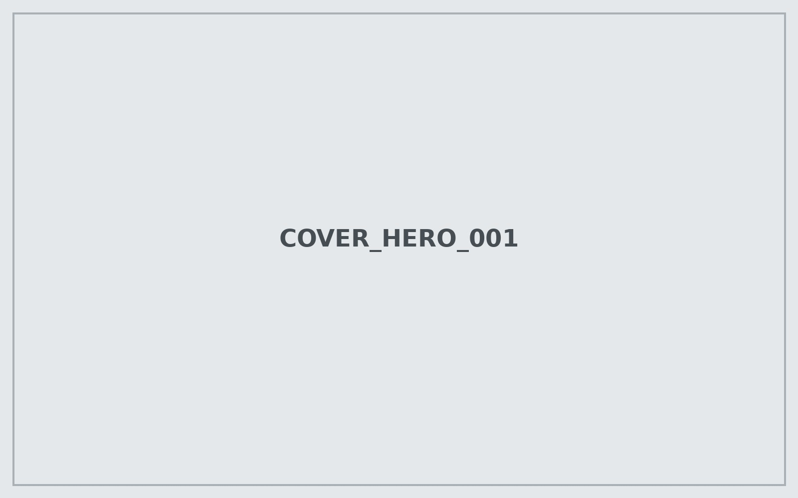
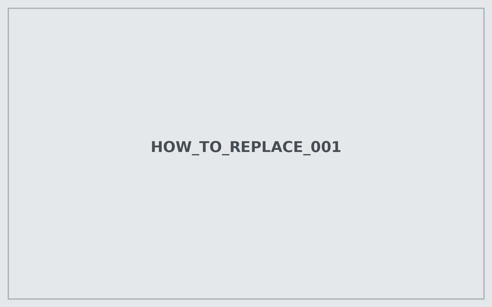
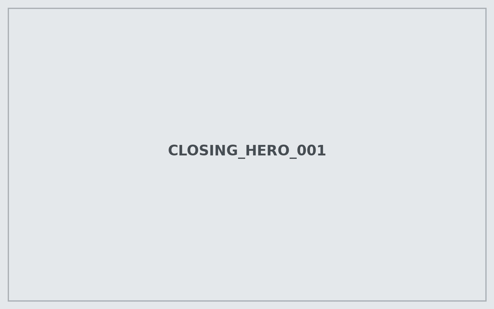

ARTINO
MAKE THE SYSTEM PHYSICAL
- Design & engineering
- Signage manufacturing
- Acrylic and mixed-material fabrication
- Retail / display fabrication
- Production, logistics & installation
MASTER CATALOG — EDITABLE WORKING EDITION
A two-company capability portfolio built to grow as product definitions, project data and photography become available.

Every image is a normal HTML image path. Replace the file in the images/ folders or change its path in the HTML, then refresh the browser.

DESIGN · PRODUCTION · EXECUTION

Artino's published material describes a one-stop model spanning initial brief, detailed design, prototype development, production and delivery, combining industrial design, execution expertise, modern machinery and project management.


Architectural, corporate, retail and informational signage produced as custom physical communication elements.

Cut → machine → form → finish → assemble.
Use this section to demonstrate manufacturing capability rather than treating every fabricated object as a separate product.


Artino describes a two-year project involving manufacture and installation of updated wayfinding signs based on internationally gathered standards.

Custom boxes, shelves and trays developed for product presentation with requirements including isolation, low weight and washability.

Retail collaboration including shelves, store signage, stands and shelf lighting.
WAYFINDING · ACCESSIBILITY · NAVIGATION

InoWay is positioned as an Artino division dedicated to intuitive wayfinding for airports, hospitals, universities and other complex environments. Its published positioning emphasizes accessibility, universal design, clarity, consistency and user-centered navigation.

Information should be quickly understood.
Visual language should remain predictable across the journey.
Navigation should work for diverse physical and sensory needs.
The right information appears at the right decision point.
Complex public environments may require multilingual communication.
The system is designed around real journeys, not isolated signs.

Multilingual and user-centered navigation for complex airport journeys.

Accessible navigation for patients, visitors and staff, with emphasis on clarity and universal design.

Entrance → Building → Floor → Department → Room.

Clear navigation for high-traffic urban environments.

Discover → Navigate → Find → Exit.

Rules, areas, conditions and driver navigation.
InoWay’s positioning places inclusive experiences and universal design at the center of wayfinding.

| Capability | InoWay | Artino |
|---|---|---|
| Wayfinding strategy | ● | |
| Information hierarchy | ● | |
| Accessibility / universal design | ● | ● |
| Signage design | ● | ● |
| Signage manufacturing | ● | |
| Acrylic fabrication | ● | |
| CNC / laser / digital cutting | ● | |
| Vacuum forming / molding | ● | |
| Retail displays | ● | |
| Project installation | ● | ● |
| Airport applications | ● | ● |
| Hospital / campus / transit applications | ● | ● |

Design · Engineering · Fabrication · Installation

Short catalog description goes here. Keep it factual, application-led and easy to scan.
ARTINO × INOWAY
A scalable master for signage, fabrication, wayfinding and accessible environmental communication.
